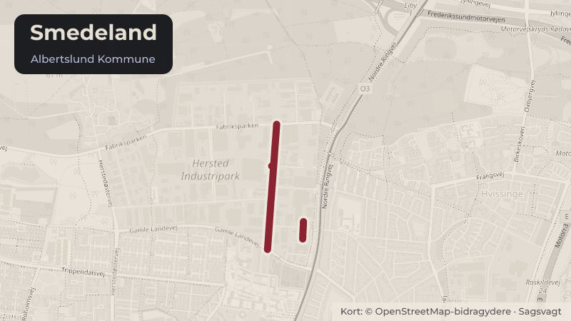

Besluttet 8. september, Kommunalbestyrelsen, Albertslund
At igangsætte lokalplan på Smedeland 8
Trafik og cyklerBoligerByggeri og lokalplaner

Kort fortalt
- Forslaget
- Der udarbejdes forslag til lokalplan for Smedeland 8.
- Hvem
- Kommunalbestyrelsen, Albertslund Kommune
- Hvornår
- Tirsdag 8. september 2026
- Status
- Besluttet. X X Supplerende sagsfremstilling Godkendte indstillingen. (Ø) kunne ikke godkende.
Er noget forkert her? Skriv til os
Læs hele sagen Kommunens egen tekst
Indstilling
X
Direktøren for By, Kultur, Miljø & Beskæftigelse indstiller,
1. at der udarbejdes forslag til lokalplan for Smedeland 8.
Sagsfremstilling
Smedeland 8 udgøres af en matrikel (8i) med et samlet grundareal på 5298 m² og er
beliggende på den sydlige stikvej til Smedeland, den fremtidige Valsevangen (kortbilag).
Området rummer i dag en ubenyttet kontorejendom fra 1967, parkering samt beplantning med
træer i det sydlige skel.
Kommuneplan 2022-2034 fastlægger anvendelsen til blandet bolig og erhverv i det
stationsnære kerneområde i planramme BE09 (bilag).
Området er i dag omfattet af Byplanvedtægt nr. 5, som ikke tillader byggeri af boliger. For at
realisere projektet, skal der derfor udarbejdes en ny lokalplan.
Kommunalbestyrelsen igangsatte den 12. november 2019 en lokalplan for ombygning af den
eksisterende kontorejendom. Den 21. juni 2022 afviste kommunalbestyrelsen imidlertid det
foreliggende projektforslag, fordi det viste sig nødvendigt at etablere en støjskærm i 5 etagers
højde mod syd, hvormed lokalplanarbejdet blev standset.
Nu har en ny bygherre henvendt sig til forvaltningen, og behovet for støjafskærmning er ikke
længere aktuelt pga. konkrete ønsker om at byudvikle på naboejendommen.
Den genoptagne dialog med bygherre har omhandlet mulighederne for at genanvende den
eksisterende kontorbygning og omdanne den til boliger. Dette har dog vist sig ikke muligt, da
en bygningsdybde på 16 m ikke tillader indretning af lejligheder med tilstrækkeligt dagslys fra
begge sider i den eksisterende bygning.
Startredegørelse
Bygherres (Becker & Nielsen) forslag til startredegørelse (bilag) indeholder en vision om at
opføre boliger i en hesteskoformet etagebebyggelse i 5-6 etager. Bebyggelsen består af tre
bygningskroppe med en delvist nedgravet parkeringskælder under gårdrummet. Bebyggelsen
får en bred åbning mod syd og en mindre åbning mellem bygningerne mod øst. Her er den
primære adgang fra gadeniveau til det hævede gårdrum i form af trappe med ophold og en lift.
Ved den store åbning mod syd etableres en landskabelig rampe, som både giver mulighed for
ophold og øget tilgængelighed til gårdanlægget. Der etableres et fælleshus på 150m² i gården
med elevator til parkeringskælderen. Den fælles parkeringskælder får nedkørsel i det
nordvestlige hjørne. Cykler får adgang til parkeringskælderen via en selvstændig rampe.
Startredegørelsen foreslår følgende rammer for det videre arbejde med lokalplanforslaget, der
alle er i overensstemmelse med Kommuneplan 2022-2034:
Bebyggelsesprocent
Den nuværende kommuneplanramme BE09 giver mulighed for en bebyggelsesprocent på 150
samlet for rammen. Projektet forventes at udnytte denne bebyggelsesprocent fuldt ud.
Etageantal og bygningshøjde
Kommuneplanrammen tillader byggeri på op til 6 etager med en maksimal højde på 24 meter,
dog op til 9 etager og 33 meter på særlige, identitetsskabende steder. Bebyggelsen
planlægges i en højde på 5 etager mod vest og 6 etager mod nord og øst, uden brug af
muligheden for tårne.
Etageareal og forventet boligareal
Den samlede bebyggelse planlægges til ca. 7945 m² fordelt på ca. 96 lejligheder. Den
gennemsnitlige boligstørrelse er minimum 80 m². I gårdrummet mod syd etableres et indendørs
fællesareal i form af et fritstående fælleshus på 150m².
Fælles opholdsarealer
Fælles udendørs opholdsarealer udlægges svarende til mindst 30% af boligetagearealet for
bygninger op til 6 etager. Der planlægges derfor for ca. 2385 m² fælles opholdsarealer fordelt
på gårdrum, tagterrasse på fælleshuset og dele af kantzonerne. Alle boliger sikres privat
udendørs opholdsareal i form af altan eller terrasse/have på terræn.
Parkering
Bilparkering placeres primært i parkeringskælder under gårdrummet og delvist under
bebyggelsen. Som supplement til p-kælderen etableres enkelte p-pladser på terræn mod øst.
Cykelparkering placeres i kælderen samt på terræn i kantzoner mod nord, øst og vest.
Projektet er i overensstemmelse med kommuneplanens minimumparkeringsnorm, og der
planlægges ikke for delebiler.
Startredegørelsen er udgangspunkt for det videre arbejde med en ny lokalplan
Bygherre har med startredegørelsen lavet anslag til udformning, brug af materialer,
fællesarealer, grønne områder mv. I det videre arbejde med lokalplanforslaget skal projektet
yderligere bearbejdes og justeres. Der kan således forventes tilpasninger af projektet for at
sikre det bedst mulige projekt i overensstemmelse med praksis for Hersted og ud fra de
konkrete forhold på ejendommen.
Principper for udvikling af Hersted Industripark
Niveauet for det kommende byggeris kvalitet, og udgangspunktet for forhandling og dialog
mellem kommune og udviklere om de enkelte projekter, sker i henhold til 'Principper for
udviklingen af Hersted', fase 1, etape 1, som vedtaget af Kommunalbestyrelsen den 13.
december 2022.
Startredegørelsen følger i vidt omfang ”Principper for udviklingen af Hersted Industripark”, men
med enkelte variationer:
For eksempel kan 6. etage på gadesiden udføres med en skrånende vinkel, så den fremstår
som en tagetage, i stedet for at trækkes tilbage. Derudover er lysafstandsforholdene
bearbejdet og søgt optimeret, blandt andet med gårdrumsåbninger mod syd og øst. Samtidigt
har nabobebyggelserne mod øst (Malervangen 15-21) og vest (lokalplan for Smedeland 6)
gårdrumsåbninger mod denne nye bebyggelse, så samlet set vurderer forvaltningen, at både
den nye bebyggelse og naboerne vil få gode lysforhold, selv i et tæt bebygget område.
Ved vedtagelse af lokalplanen forventes Kommuneplan 2026-2038 at være vedtaget, så
projektet skal udvikles, så det er i overensstemmelse med den nye kommuneplan, dvs. med
højde for de forventede krav om begrønningsprocent, biofaktor og ladcykelparkering.
I tilknytning til lokalplanarbejdet vil forvaltningen foretage miljøvurdering af de miljø- og
naturmæssige konsekvenser af projektet.
Kommunens vision og politikker
Smedeland 8 ligger i det stationsnære kerneområde ved letbanestationen i Hersted. I dette
område kan der ifølge kommuneplanen ske udvikling med blandede bolig og
erhvervsbebyggelser.
Det skitserede projekt muliggør etablering af nye boliger, der kan tiltrække nye borgere til
Albertslund. Projektet kan bidrage til Albertslund Kommunes vision om at udvikle ”den
bæredygtige by for børnene, det grønne og fællesskaber”, ved at skabe rammerne for en bydel
med en blanding af byfunktioner og boliger samt tilføje et fælles grønt gårdrum.
Økonomi
Projektet indgår i Befolkningsprognosen 2026. De aktuelle projektforudsætninger
vurderes ikke at ændre grundlaget for de seneste kapacitetsvurderinger. Projektet er
fortsat i en tidlig fase, hvorfor projektforudsætningerne kvalificeres løbende.
Lovgrundlag
Bekendtgørelse om lov om planlægning (Planloven) LBK nr. 572 af 29. maj 2024.
Bekendtgørelse af lov om miljøvurdering af planer og programmer og af konkrete projekter
(VVM) (Miljøvurderingsloven) LBK nr. 4 af 3. januar 2023.
Borgerperspektiv
Forslag til lokalplan skal politisk behandles og sendes i offentlig høring sammen med
miljøvurdering af planen. I høringsperioden planlægges for et åbent hus-arrangement f.eks. i
lokalområdet eller på adressen.
Historik
Beslutning fra Plan- og Byudviklingsudvalget, den 25. august 2026, punkt 6:
Tiltrådte indstillingen
(Ø) stemte imod
Beslutning fra Økonomiudvalget, den 1. september 2026, punkt 14:
Tiltrådte indstillingen.
(Ø) kunne ikke tiltræde.
Hediye Temiz (B) deltog ikke under punktet.
Beslutning
X
X
Supplerende
sagsfremstilling
Godkendte indstillingen.
(Ø) kunne ikke godkende.
Kilde: Albertslund Kommune, Kommunalbestyrelsen, referat fra mødet tirsdag 8. september 2026, punkt 8. Læs den originale sag hos kommunen.
Steder i sagen: Smedeland